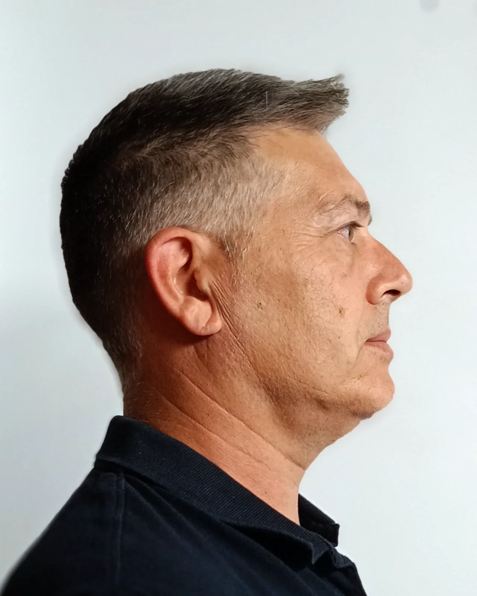
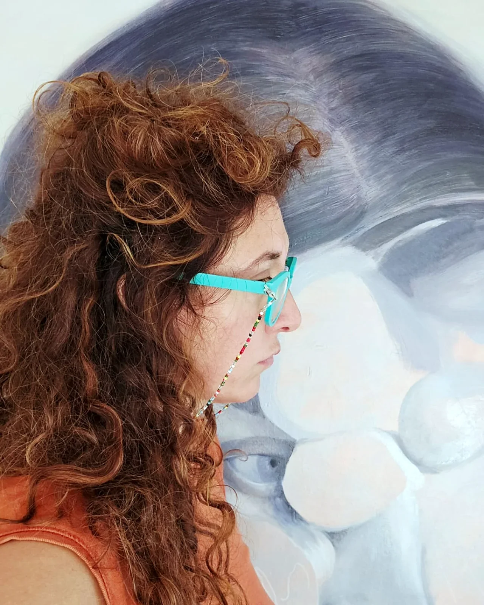

PRO-FILI Festival
Gli altri artisti

Massimo Marchioro
Pittura
Cerca nelle stanze più profonde, e le scale che portano in alto.

Mattia Signorini
Scrittura
Romanziere, tradotto in mezzo mondo.

Giorgia Roversi
Pittura
Pittura dell'anatomia invisibile delle emozioni.

Marcello Ubertone
Cantautorato
Canzoni che raccontano storie, tra immaginazione e vita vera.